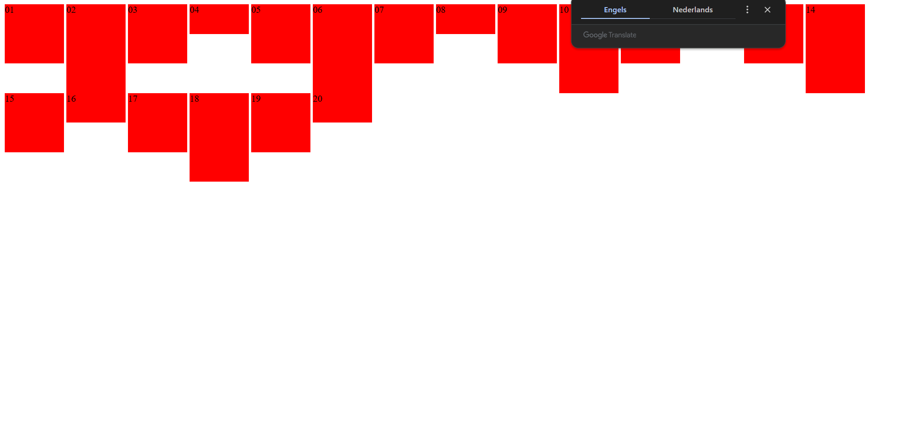
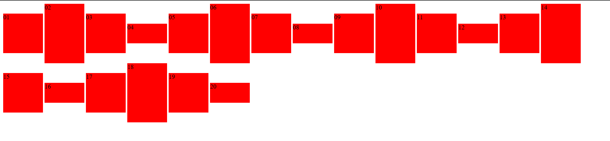
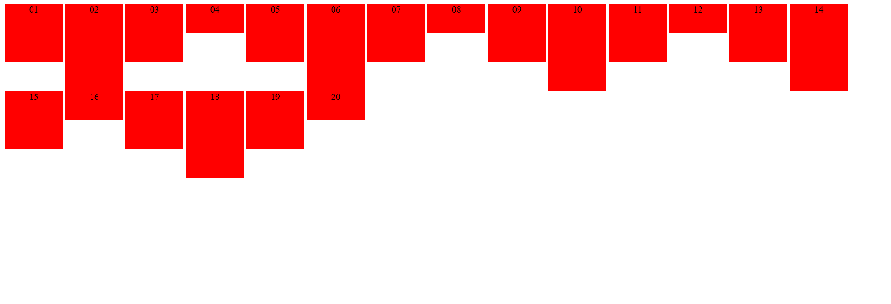
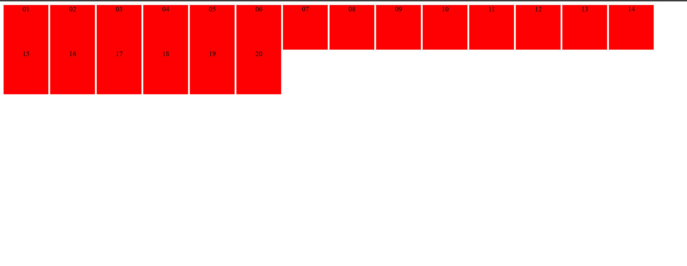

vertical-allign zorgt ervoor om een vak verticaal uit te lijnen op een inline niveau binnen een inlinevak. Het kan gebruikt worden om een afbeelding in een tekstvak verticaal te positioneren.
 De makkelijkste manier om tekst te centreren op 1 regel is door text-align:center te gebruikern.
Je kan meerdere regels tergelijk centreren door een tabel te gebruiken.
De klasse large/short heeft voorang op de klasse area omdat tall/short het element height als laatst bewerkt. Hierdoor geeft CSS prioriteit aan deze klassen in plaats van area.
De gewone staat van voorbeeld2.
De staat van voorbeeld2 als je de area klasse onder de tall en short klassen zet.